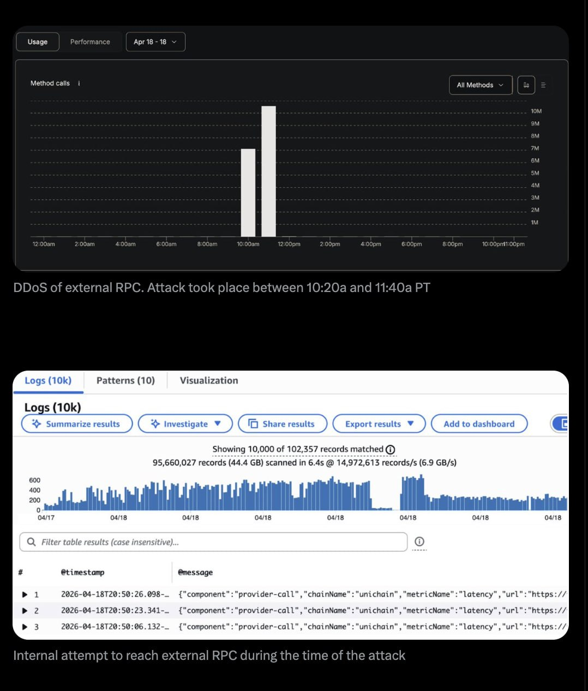

Kelp DAO потерял $292 миллиона. Что это значит для DeFi и почему я вчера докупил AAVE
Крупнейший взлом децентрализованных финансов в 2026 году — разбор по фактам, без паники и спекуляций. Что сломалось, как это зацепило Aave, что делать, если ваши деньги там зависли. И почему этот инцидент на самом деле делает систему сильнее.
Что случилось
19 апреля хакеры украли у проекта Kelp DAO около $292 миллионов. Это больше, чем годовой бюджет среднего европейского города, и это крупнейший взлом в мире децентрализованных финансов (DeFi) за весь 2026 год — обогнавший предыдущий рекорд этого же месяца, взлом Drift Protocol 1 апреля на $285 миллионов.
Меня эта история задела лично. У меня лежат эфиры в проекте Aave — крупнейшем "цифровом банке без банка", где можно положить крипту под процент или взять в долг под залог. До 19 апреля в Aave хранилось больше $40 миллиардов клиентских средств. Сам Aave не взламывали — и это важный момент, к которому я вернусь. Но рикошетом от чужого взлома мои деньги временно заморозились: Aave ввёл экстренные меры, и я не могу сейчас вывести эфиры напрямую.
И вот с этого момента начинается то, о чём я хочу поговорить. В твиттере и телеграм-каналах с вечера субботы — истерика. Крупнейшие медиа (Bloomberg, Coindesk) выпускают заголовки в духе "DeFi мёртв", "паника перекидывается на весь рынок", "самый чёрный день децентрализованных финансов". Каждый второй инфлюенсер превращает $292M в приговор всей технологии.
Я считаю это дешёвой манипуляцией. Давайте разберём по фактам.
Масштаб — много это или мало в исторической перспективе
Чтобы понимать контекст, я свёл статистику последних лет по данным Chainalysis (это аналитическая компания, которая отслеживает все крупные крипто-взломы в мире):
Кроме двух рекордных взломов в апреле, были и менее громкие, но характерные:
- 3 апреля — Silo Finance украли $392 тысячи (неправильно настроенный "оракул" — источник данных)
- 3 апреля — Dango, $410 тысяч (программная ошибка в мосту)
- 14 апреля — CoW Swap, $1.2 миллиона (угон домена сайта — обычная мошенническая схема, не специфичная для крипты)
Важный поворот, который никто в истерике не замечает: Chainalysis в годовом отчёте за 2025 отдельно написал:
"DeFi-взломы в 2025 году оставались подавленными. DeFi-протоколы усилили защиту. Основной рост потерь пришёлся на взломы личных кошельков и централизованных сервисов."
Перевод: сам DeFi защищался в 2025 лучше, чем когда-либо. Деньги уходили через биржи и персональные кошельки — то есть через человеческий фактор, а не через изъяны протоколов. Апрель 2026 — это статистический выброс, а не возвращение тренда.
Что такое DeFi и Aave — коротко для тех, кто не в теме
DeFi (де-фай) — это финансы без банков. Вместо того, чтобы банк хранил ваши деньги и принимал решения, кому их выдать в кредит, этим занимается компьютерная программа с открытым исходным кодом. Программа работает по публичным правилам, которые видит любой желающий. Нельзя "позвонить президенту банка и договориться" — либо условие выполнено, либо нет.
Aave — один из крупнейших таких "программных банков". В нём клиенты со всего мира:
- Кладут крипту (эфир, стейблкоины) и получают процент, как депозит
- Берут в долг под залог (как в ломбарде — сдал эфиры, получил доллары, отдал долг — забрал эфиры)
До инцидента в Aave лежало $40+ миллиардов. Это реальный финансовый институт масштаба среднего европейского банка. Почему люди туда идут: проценты выше, чем в банках, доступ круглосуточный, нет бюрократии, можно участвовать из любой страны без документов, и всё прозрачно — каждая операция, каждый баланс, каждое правило публичны.
Что такое Kelp DAO и чем они занимаются
Прежде чем разбирать сам взлом, важно понять, что вообще делает Kelp. Иначе потом будет сложно следить за деталями атаки.
Kelp DAO — это "фабрика многослойного дохода" для держателей эфира. Объясню просто.
Представьте, что у вас на руках эфир (ETH). Что с ним можно делать:
- Просто держать — прибыль только от роста цены
- Отдать в стейкинг — получать процент за то, что ваш эфир помогает защищать сеть Ethereum (типа депозит, только в крипте)
- Отдать в рестейкинг — тот же самый эфир одновременно защищает несколько сервисов поверх Ethereum, и процент капает сразу из нескольких источников
Вот этим последним — рестейкингом — и занимается Kelp. Они берут у вас эфир (обычный ETH или уже застейканный — например, stETH от Lido), отправляют его в инфраструктуру EigenLayer (это отдельный проект, который и позволяет "сдавать" эфир в работу на несколько сервисов одновременно), а взамен выдают вам специальный токен rsETH.
или stETH
рестейкинг
на несколько сервисов
+ многослойный %
стейблкоины
использование
rsETH — это по сути квитанция: "у меня в Kelp лежит X эфиров, которые сейчас работают в рестейкинге и приносят процент". Эту квитанцию вы можете:
- Держать и просто получать доход
- Использовать в других DeFi-протоколах — например, внести в Aave как залог и под него взять стейблкоины (именно то, что и сделал хакер)
- Продать в любой момент на бирже и вернуться в обычный эфир
До инцидента объём активов в Kelp составлял порядка $700M — $1B (в зависимости от цены эфира). Всего в мире существовало около 650 000 токенов rsETH. Поэтому кража 116 500 штук — это примерно 18% всех rsETH, по-настоящему болезненный удар для проекта.
И ещё один ключевой момент для понимания атаки. Kelp работает на нескольких блокчейн-сетях одновременно. Пользователь может внести эфир на одной сети (Ethereum) и захотеть получить rsETH на другой (Arbitrum, Linea и т.д.). Между сетями работает мост от LayerZero, который должен подтвердить: "да, пользователь реально положил 10 ETH в Kelp на Ethereum — выдавайте ему 10 rsETH на Arbitrum". Ровно в этом моменте подтверждения хакеры и вклинились. А теперь подробности.
Что сломалось у Kelp — разбор атаки
Представьте банк с филиалами в разных городах. Когда клиент переводит деньги из филиала А в филиал Б, деньги не летают физически — просто филиал Б получает подтверждение от специальной службы: "клиент в А перевёл 100 долларов, выдавайте".
В мире крипты разные блокчейн-сети — это те самые разные "филиалы". А между ними работают мосты (bridges), которые подтверждают переводы. В нашем случае Kelp использовал LayerZero — инфраструктуру, которую я бы сравнил с "железными дорогами между сетями".
Безопасность LayerZero держится на DVN (независимые верификаторы — проще назвать их нотариусами). Нотариус — это специальная компания, чья работа — подтверждать, что транзакция настоящая. Без его подписи мост не выдаёт деньги.
LayerZero очень настойчиво рекомендуют всем клиентам: ставьте не одного, а коллегию нотариусов. Это называется "multi-DVN setup" или "multi-DVN с избыточностью". Логика проста: если один нотариус ошибся, был куплен или его "хакнули" — другие его перекроют. Это прописано в их документации. В чек-листе интеграции. LayerZero отдельно проговаривали это с самим Kelp.
А Kelp решил сэкономить и поставил одного. 1-of-1 DVN — "один из одного". Одна подпись нотариуса = деньги выдаются. Второго мнения нет.
Если одного купили или взломали — остальные перекроют.
В официальном разборе инцидента от 20 апреля LayerZero не стесняется в выражениях:
"Конфигурация Kelp напрямую противоречила модели избыточности с несколькими DVN, которую LayerZero последовательно рекомендовала всем интеграционным партнёрам. LayerZero и другие внешние стороны ранее доводили до KelpDAO лучшие практики диверсификации DVN. Несмотря на эти рекомендации, KelpDAO выбрал конфигурацию 1/1."
Это редкий момент, когда инфраструктурный провайдер публично показывает пальцем на своего клиента и говорит: "мы предупреждали".
Как именно украли — механика атаки
Нотариус, когда подтверждает транзакцию, не заглядывает в блокчейн сам. Он опрашивает источники данных — это специальные серверы, которые называются RPC-нодами. Проще — сравните с почтовыми отделениями: нотариус звонит в несколько почтовых отделений и спрашивает, "что там с транзакцией №12345?". Они отвечают — он подписывает.
Северокорейские хакеры провели то, что в мире кибербезопасности называется атакой на цепочку поставок (supply chain attack) — одну из самых сложных и элегантных форм кибератаки. Они:
- Получили список RPC-нод, которыми пользовался единственный нотариус Kelp — LayerZero Labs DVN
- Скомпрометировали две из них — независимые ноды, работавшие на разных серверных кластерах без прямой связи друг с другом
- Подменили программное обеспечение на этих нодах (технический термин — "swapped op-geth binaries")
- Настроили подмену так, что:
- Нотариусу LayerZero эти ноды сообщали фальшивку
- Всем остальным клиентам (включая собственный мониторинг LayerZero) — говорили правду
Этот трюк называется RPC-spoofing. Его смысл в том, чтобы никто не заподозрил подмену — внешне всё работало штатно.
Нотариус получил "подтверждение" сразу с двух независимых источников. Поверил. Подписал. Мост выпустил 116 500 токенов rsETH (это около $292 миллионов, примерно 18% всех токенов rsETH, существующих в мире).
"В результате этой манипуляции экземпляр DVN, управляемый LayerZero Labs, подтвердил транзакции, которых на самом деле не было."
Если бы у Kelp было несколько нотариусов с независимыми источниками данных, такой трюк не сработал бы — атакующим пришлось бы скомпрометировать инфраструктуру разных, не связанных между собой провайдеров. Это на порядки сложнее и требует на порядки больше ресурсов.
Хронология атаки (по минутам)
- 17:35 UTC 18 апреля — первый транш ушёл, $292M в кармане атакующего
- 18:21 UTC — через 46 минут мультисиг Kelp остановил контракты
- 18:26 UTC и 18:28 UTC — две повторные попытки атакующего с тем же фальшивым пакетом, каждая по ~40 000 rsETH (~$100M) — обе отменены. Защита сработала
То есть из трёх ударов первый прошёл, два были отбиты. Это не полный провал защиты, это частичное проникновение — с быстрой реакцией в течение часа.
Кто украл — северокорейский спецназ, а не хакер-одиночка
Это не школьники с AI-скриптом. По атрибуции LayerZero, подтверждённой Seal911 (это известный whitehat-коллектив в крипто-безопасности, вроде добровольной пожарной бригады индустрии), атаку провела группа Lazarus — точнее, её подразделение TraderTraitor, специализирующееся на supply chain атаках на криптоинфраструктуру.
Lazarus — это государственная хакерская группа КНДР. Это не преувеличение: американские, британские и южнокорейские спецслужбы многократно подтверждали её связь с разведкой Северной Кореи. Санкции ООН официально определяют её как государственный актор. Деньги, которые они воруют, идут на финансирование ракетной и ядерной программ КНДР.
На их счету:
- $1.4 миллиарда у биржи Bybit в феврале 2025 (крупнейший взлом в истории крипты)
- $305 миллионов у DMM Bitcoin в 2024
- $235 миллионов у WazirX в 2024
- Десятки более мелких взломов
Их стиль — не "ворваться и ломать код". Их стиль — годами разрабатывать точку входа, изучать цель, находить единственного сотрудника или единственную систему, которую можно скомпрометировать, и бить точно туда. В случае Kelp этой "единственной системой" стал тот самый 1-of-1 DVN.
Разница с уличным хакером примерно такая же, как между карманником и спецназом с тепловизорами и снайперами. И вот этот спецназ целенаправленно ударил ровно по самому слабому месту.
Как это зацепило Aave — и меня лично
Украденные токены хакер не стал обналичивать сразу (для Lazarus это было бы слишком прямолинейно). Вместо этого он внёс их как залог в Aave V3 и взял под них кредит в настоящем эфире.
То есть технически выглядело так: пришёл "клиент", сдал в ломбард "золото" (формально оно ещё было настоящим по смарт-контракту Kelp — мост-то выдал реальный токен), получил под это доллары, ушёл. Только потом выяснилось, что золото — поддельное в том смысле, что оно не обеспечено реальными эфирами на другой стороне.
поддельных rsETH
как залог
настоящий WETH
Основатель Aave Stani Kulechov в первый же час выпустил коммуникацию:
"rsETH заморожен в Aave V3 и V4. Актив не имеет кредитной силы в качестве меры из-за эксплойта моста KelpDAO, который произошёл за пределами Aave. Ни Aave V3, ни Aave V4 больше не имеют экспозиции на rsETH."
Сутки спустя, 20 апреля в 02:17 UTC, Aave выпустил следующее обновление (этот твит получил 721 тысячу просмотров):
"По нашему анализу, rsETH в основной сети Ethereum полностью обеспечен. Из осторожности rsETH остаётся замороженным в Aave V3 и V4, а воздействие инцидента ограничено. Резервы WETH также остаются замороженными в затронутых рынках, включая Ethereum, Arbitrum, Base, Mantle и Linea. Aave активно проверяет информацию и оценивает возможные решения."
Ключевая фраза здесь — "полностью обеспечен". Что она значит: существующие токены rsETH у реальных держателей подкреплены настоящими эфирами. Проблема не в токене как классе. Проблема в том, что атакующий допечатал себе 116 500 лишних — и эти лишние, необеспеченные, стали плохим долгом в Aave.
Цифры рикошета
Именно поэтому я лично не могу вывести свои эфиры прямо сейчас. Это не решение Aave меня заблокировать — это арифметика: деньги есть на балансе, но их физически нет в свободном пуле.
А теперь главное — почему я не паникую
Здесь как раз та развилка, ради которой я вообще сел писать.
Сейчас на каждом углу — "DeFi это пирамида, бегите, технология провалилась". Я считаю это дешёвой манипуляцией. Каждый, кто кричит громче — делает это ради хайпа и просмотров. Его не волнует, что вы, обычный человек, завтра примете под эту истерику реальные решения про свои деньги.
Если мыслить в категориях "чёрное-белое" — то надо запретить автомобили. В мире в ДТП каждый год гибнут больше миллиона человек. По логике "одна катастрофа = запрет всей отрасли" автомобильной промышленности не должно существовать. Но мы так не делаем. Потому что понимаем: причина смерти — не "автомобиль как таковой". Это пьяный водитель. Невнимательный пешеход. Неисправные тормоза, которые производитель должен был отозвать. Мы не отменяем транспорт — мы улучшаем безопасность, отзываем бракованные модели, наказываем безответственных производителей.
В DeFi — ровно то же самое. В случае Kelp сломалась не технология. Сломалась конкретная управленческая ошибка руководства Kelp: они пошли в продакшен с 1-of-1 DVN, несмотря на прямые письменные рекомендации LayerZero обратного. Ни код Kelp не был дырявым, ни блокчейн Ethereum не был взломан, ни протокол LayerZero не содержал уязвимости. Прямая цитата из отчёта LayerZero по итогам атаки:
"Сам протокол LayerZero отработал ровно так, как задумано. Никакой уязвимости в протоколе обнаружено не было."
Изъян был в конкретном человеке на конкретной должности в Kelp, который утвердил конфигурацию в обход чек-листа безопасности.
Почему это вообще происходит — два фактора
Фактор первый. Индустрия очень молодая.
DeFi как массовое явление существует 5-7 лет. Для сравнения: автомобильной промышленности — 130 лет, банковской системе в её современном виде — больше 300 лет. Представьте, что автомобили только что изобрели, и на дороги массово выехали машины 15 разных производителей, у каждого свои стандарты безопасности, ремни есть не у всех, подушек безопасности ещё никто не ставит. Это и есть состояние DeFi сегодня.
Многие крупные протоколы проектировались в 2020-2022 годах, на пике хайпа, с приоритетом "успеть первыми, пока есть интерес рынка". Безопасность часто уходила на второй план. Это историческая реальность, которую надо просто признать — без паники, но и без розовых очков. Проекты, спроектированные в ту эпоху, будут находить свои слабые места в ближайшие годы. Это объективный процесс.
Фактор второй. Появился искусственный интеллект, который меняет правила игры.
Раньше взлом смарт-контракта (программы DeFi) был задачей уровня "ограбление казино из голливудского фильма" — нужна была команда специалистов, месяцы разведки, выдающийся интеллект. Сейчас ИИ делает эту работу быстро и массово.
Вот конкретные цифры из исследования Anthropic (это компания, которая делает ИИ Claude) за 2025 год:
- Средняя стоимость скана одного смарт-контракта на уязвимости — $1.22 (сто двадцать рублей)
- За день один атакующий может просканировать тысячи контрактов
- ИИ самостоятельно пишет рабочий эксплойт. В экспериментах Claude Opus 4.5 сгенерировал рабочую атаку на $3.5 миллиона, GPT-5 — на $1.12 миллиона
- За 2025 год ИИ нашёл 19 реальных уязвимостей, появившихся уже после даты, до которой он обучался — то есть без готовых подсказок в своих данных
- Специализированный ИИ для поиска уязвимостей детектит 92% проблем в контрактах — против 34% у обычного чат-бота. Разница в 2.7 раза
- Возможности ИИ в этой области удваиваются примерно каждые 1.3 месяца
Компания Halborn, занимающаяся аудитами крипто-безопасности, в своём отчёте за начало 2026 отдельно зафиксировала резкий рост автоматизированных атак на "устаревшие" смарт-контракты. Злоумышленник с бюджетом в пару сотен долларов натравливает ИИ-агента на тысячи контрактов, тот сканирует, генерирует эксплойт и пробует дрейнить. Ноль строк кода руками.
То есть защиты, которые три года назад считались достаточными, сегодня ломаются за часы. Это не провал создателей старых проектов — это просто мир изменился быстрее, чем они успели обновиться. И сейчас индустрия в ускоренном режиме догоняет.
Важный нюанс применительно к Kelp: конкретно этот взлом не был "ИИ-атакой". Lazarus использовал классическую атаку на цепочку поставок — это высокоинтеллектуальная работа людей, и ИИ там в лучшем случае помогал на вспомогательных ролях (разведка, анализ инфраструктуры). Я упоминаю AI-фактор не чтобы свалить всё на него, а чтобы показать общий контекст: угрозы эволюционируют быстрее, чем большинство проектов успевает усилить защиту. Kelp проигнорировал апгрейд защиты, когда их об этом прямо просили — и стал жертвой именно из-за этой задержки.
Что хорошего в этой истории (и почему никто не видит)
Все видят плохое. $292M украли. Aave на паузе. Цена AAVE упала. Заголовки "DeFi is dead".
А теперь — то, о чём никто не пишет. Три факта, каждый из которых в мире традиционных финансов был бы невозможен.
Факт первый. LayerZero за 36 часов опубликовала детальный разбор инцидента.
Через полтора дня после атаки LayerZero выпустил подробный технический отчёт о произошедшем. С признанием ответственности (по части их DVN), с анализом механики атаки, с внутренними логами AWS CloudWatch, с явным указанием на собственные недоработки в процессе работы с клиентом, который выбрал плохую конфигурацию.
Они привели скриншоты внутренних логов мониторинга ровно в момент атаки — видно, как их DVN пытался достучаться до правильных серверов, но уже получал подменённые ответы.

Они описали собственные меры безопасности — EDR на всех устройствах, контроль доступа по принципу "минимальных привилегий", изолированные среды, собственная security-команда плюс внешние аудиторы, идущий прямо сейчас SOC2 audit (это золотой стандарт сертификации для enterprise-инфраструктуры).
И они сделали глубокое философское признание, которое индустрия должна будет переосмыслить:
"RPC-верификация — это фундаментальное ограничение всех off-chain сервисов, включая мосты, биржи и так далее. Мы делимся этими выводами, чтобы индустрия училась и адаптировалась к этим новым векторам атак."
Что это значит: проблема доверия к источникам данных — общая для всей индустрии, а не уникальная для LayerZero. Крипто-биржи, оракулы, мосты, индексаторы — все упираются в тот же вопрос. И LayerZero публично учит других, как этого избегать.
Задайте себе вопрос: когда в последний раз банк, который обворовали, публиковал подробности своих систем безопасности, скриншоты логов и рекомендации, как другим банкам этого избежать? Никогда. Это противоречит всей их логике секретности. В DeFi прозрачность — в культуре.
Факт второй. LayerZero ввела новое правило в масштабах всей экосистемы.
После этой атаки LayerZero выпустила прямое заявление:
"LayerZero Labs DVN больше не будет подписывать или удостоверять сообщения от приложений, использующих конфигурацию 1/1."
То есть multi-DVN стал не рекомендацией, а жёстким требованием. Любое приложение на LayerZero с "одним нотариусом" отключается от обслуживания. Сами LayerZero активно обзванивают все приложения с таким setup'ом и заставляют мигрировать на избыточные конфигурации.
Это и есть тот самый момент, когда рынок находит свой изъян и тут же его исправляет. Не через год после десятого взлома. Не после вмешательства регулятора. А на следующий день после инцидента, самим же провайдером инфраструктуры.
Факт третий. Конкурирующий протокол за 36 часов построил спасательный круг для клиентов Aave.
Вот это — самое, на мой взгляд, красивое.
Aave заморожен, у клиентов WETH зависли в Aave, касса пустая. По логике традиционных финансов — ждите недели или месяцы, пока регулятор "разберётся" и "примет меры".
А вот что произошло в DeFi. Протокол Fluid, прямой конкурент Aave, за 36 часов после взлома выкатил специальный инструмент — aWETH Swap. По-простому:
"У вас зависли эфиры в Aave? Приходите к нам. Мы заберём вашу 'квитанцию' aWETH из Aave и выдадим вам живой ликвидный эфир — в форме wstETH (от Lido) или weETH (от ether.fi). Это обычный эфир, просто 'упакованный' другими проектами, который вы можете свободно использовать или сразу продать."
Начальная ёмкость программы — $1 миллиард. В партнёрах: Lido, ether.fi, 1inch, KyberNetwork, 0xProject. Всё это топовые инфра-проекты экосистемы, которые скоординировались за выходные.
В мире традиционных банков это физически невозможно. Банк А никогда не запустит продукт, помогающий клиентам банка Б вывести деньги из банка Б. Это противоречит всей логике конкурентной игры. А здесь сделали. Без согласований с регулятором, без пресс-релизов на три месяца вперёд, без корпоративного бюрократического ада. Увидели проблему у соседа по отрасли — и за выходные построили решение, потому что все понимают: падение одной части системы угрожает всей.
Сравните это "за 36 часов запустили $1B спасательную программу" с тем, как в 2008 году после краха Lehman Brothers люди ждали месяцы, пока правительство США разберётся, что делать с замороженными активами. И сравнивайте это с тем, что я, обычный клиент, прямо сейчас могу пойти и воспользоваться Fluid, чтобы вытащить свои деньги — если захочу.
Почему я докупаю Aave
Честно: да, у меня заморожены деньги в Aave. Да, цена AAVE упала на 16-20%. Да, я в стрессе — любой нормальный человек был бы.
И при этом вчера я докупил AAVE на просадке. Подписчики Синдиката об этом знают — я написал там сразу, до того, как начал разбираться публично. Это не задний ум и не попытка "выглядеть умно после факта". Это решение, принятое в моменте, на основании того же анализа, что я раскладываю сейчас.

Кратко: что такое DeFi Синдикат
Это моё закрытое сообщество, где живёт рабочая часть моей стратегии — то, что обычно не выкладывают в открытый доступ. Внутри:
- Сделки в реальном времени — когда я захожу или выхожу, подписчики узнают первыми (как с докупом AAVE вчера)
- Готовые правила и инструменты под кризисы в протоколах — тот самый пул, в который уходит разбор Kelp/Aave
- AI-аналитик Фидель — отвечает на вопросы по позициям, пулам и рискам 24/7
- Ресёрч по новым протоколам до того, как о них напишут на русскоязычных каналах
Отдельно Синдикат не продаётся. Попасть в него можно только через интенсив «DeFi с нуля» — там я объясняю, как устроена система изнутри и почему именно такой путь. Подробности и ссылка — в конце поста.
Почему я это сделал:
- Код Aave не сломан. Его не взломали. Его использовали через чужую дыру. Это как если бы в ломбард пришёл клиент с поддельными документами на золото — проблема не в ломбарде, проблема в подделке. Ломбард, конечно, должен был документы проверить тщательнее, но это проблема конкретного процесса, а не устройства ломбарда.
- Коммуникация Aave — зрелая. Никакой паники, оправданий, попыток замять. Два публичных заявления с интервалом в сутки, каждое — конкретное, фактологическое, без эмоций. Ключевая фраза — "оцениваем возможные решения". Это означает, что финальная схема покрытия $196M плохого долга ещё не выбрана. Приоритет номер один — возврат через Kelp (переговоры, возможные соглашения о компенсации, работа с правоохранителями для возврата). У Aave есть встроенный страховой фонд Umbrella (около $50 миллионов). Только в крайнем случае, если всё остальное провалится, обсуждается механизм частичного покрытия убытка через систему stkAAVE (стейкеры токена управления). Это не "автоматически порежут вкладчиков" — это пятый вариант из пяти.
- Сам Stani Kulechov, основатель Aave, на прямой вопрос об устойчивости ответил спокойно: "Протокольно Aave работает, контракты не скомпрометированы, rsETH как актив полностью обеспечен. Мы оцениваем решения." В мире, где при любой плохой новости корпорации лгут и замалчивают, такая открытость редкое качество.
- Соседи (Fluid) построили мне запасной выход за 36 часов. Я не в ловушке. У меня есть опция уйти — и именно это даёт мне свободу остаться.
Я покупаю AAVE не потому что "всё отлично". Я покупаю, потому что проект проходит стресс-тест так, как должен проходить его зрелый инфраструктурный игрок. С ушибами, с реальными потерями, но без лжи, без паники, без запертых дверей. Этих качеств нет у большинства финансовых институтов мира — ни в крипте, ни в традиционных финансах.
⚠️ Важная оговорка: часть плохого долга теоретически может в итоге быть распределена между вкладчиками через механизм Umbrella или stkAAVE. Это пятый из пяти возможных сценариев, но он не исключён полностью. Я иду на этот риск осознанно, потому что верю в протокол и его команду. Это не совет повторять за мной. Каждый принимает решение под свою голову, свой горизонт и свой риск-аппетит.
Практические шаги, если вы сейчас в Aave
Это для тех, у кого реально лежат деньги в Aave. Если вы наблюдаете со стороны — можно пропустить.
Три разные ситуации — у каждой своё действие.
Ситуация 1. У вас в Aave лежит эфир (или другой ETH-производный), и вы хотите вытащить.
Напрямую вывести сейчас не получится — в пуле WETH 100% utilization, касса пуста. Ждать, пока заёмщики начнут возвращать — занятие для терпеливых (и может занять от дней до недель).
Путь решения — Fluid aWETH Swap.
Заходите в Fluid (fluid.io), находите раздел Swap, подключаете кошелёк. Fluid принимает ваш aWETH (это ваша "квитанция" из Aave, которая подтверждает, что у вас там лежат эфиры) и выдаёт взамен живой ликвидный LST — wstETH (от Lido) или weETH (от ether.fi). Оба эти токена — по сути те же эфиры, просто "упакованные" другими проектами. Вы можете использовать их свободно или тут же продать на DEX в обычный эфир.

Обмен идёт с небольшим дисконтом — это плата за то, что Fluid берёт на себя ваш риск ожидания ликвидности. Конкретный процент варьируется в моменте (на скриншоте — 2.87%), смотрите в интерфейсе, когда будете делать операцию.
Если у вас есть параллельный долг в Aave (например, заняли стейблы под эфир) — Fluid умеет и это: ваш залог бесшовно конвертируется в wstETH/weETH, долг остаётся прежним, никакой ликвидации не происходит. Этот сценарий описан в их твите 19 апреля отдельно.
Общая ёмкость программы — $1 миллиард. Пока место есть — инструмент работает. Если у вас большие позиции и нервничаете — скорее, чем позже, потому что при массовом спросе лимит может выбрать.
Ситуация 2. У вас есть долг в стейблах (USDC, USDT, DAI), взятый под залог эфира в Aave.
Коротко: я бы сейчас его закрыл.
Почему. Из-за кризиса ликвидности в Aave процент по займам в стейблкоинах резко вырос — до ~15% годовых. Это очень много. В спокойное время нормальная ставка — 5-8%.
Что это значит арифметически. Если ваш долг — $10 000, при 15% годовых это $1 500 в год или ~$125 в месяц только на обслуживание. Каждый день, пока вы держите этот долг открытым, он объедает ваш баланс значительно сильнее, чем ещё неделю назад.
Что делать конкретно:
- Если есть свободные стейблы — закройте долг полностью, сэкономите на процентах
- Если свободных нет, но есть эфиры вне Aave — продайте небольшую часть, закройте долг, остальное оставьте
- Если закрыть целиком никак — хотя бы уменьшите долг частично. Каждый $1 возврата сейчас экономит вам 15 центов в год
Это не "бегите и продавайте всё в панике". Это просто рациональная арифметика: высокая ставка = дорогое обслуживание = если можно уменьшить, уменьшайте.
Одновременно проверьте Health Factor своей позиции — показатель, насколько залог превышает долг. Если при падении цены эфира HF рискует опуститься ниже 1, ваш залог могут принудительно продать ("ликвидировать") с потерей. В условиях крипто-волатильности лишний запас здоровья не помешает.
Ситуация 3. У вас есть свободные стейблы и вы хотите заработать на повышенной ставке.
Обратная сторона того же кризиса: если заёмные ставки подскочили до 15% — значит и ставки для вкладчиков стейблов тоже резко выросли. Это базовая арифметика лендинг-протокола: банк зарабатывает на спреде между тем, что получает от заёмщика, и тем, что платит вкладчику.
Прямо сейчас внесение стейблов в Aave даёт повышенную доходность. В обычное время это 3-5% годовых в стейблах, сейчас — сильно выше (точную цифру смотрите в интерфейсе — она меняется в течение дня).

Но есть три "но", и я должен сказать их честно:
- Ставка временная. Как только ликвидность вернётся, она снизится к нормальным значениям. Это заработок "здесь и сейчас" — на недели, максимум пару месяцев, не на годы.
- Вы принимаете часть риска кризиса. Теоретически возможен сценарий, при котором часть плохого долга будет распределена между вкладчиками (тот самый "пятый из пяти" сценарий, о котором я писал). Это не базовый случай, но и не исключённый.
- Внесённые сейчас стейблы могут быть ограничены в выводе на 1-4 недели, пока ликвидность в затронутых пулах не восстановится. Если деньги могут понадобиться срочно — этот вариант не для вас.
Кому подходит: людям, которые уже понимают и принимают риски DeFi, имеют в распоряжении "свободный" капитал в стейблах, не чувствительны к блокировке средств на несколько недель, и хотят воспользоваться временным арбитражем.
Кому НЕ подходит: людям, которые впервые заходят в DeFi, кому эти деньги нужны в обозримом будущем, или кто не готов к теоретической потере части.
Резюме трёх сценариев, одной строкой на каждый
- Завис эфир? → Смотрите Fluid aWETH Swap.
- Дорогой долг в стейблах? → По возможности закрывайте, проценты кусаются.
- Есть свободные стейблы и нервы крепкие? → Можете зайти на повышенную ставку, понимая временность и риски.
Ремарка про Синдикат
Эти три сценария — не одноразовые "что делать прямо сейчас". Я прямо сейчас, по горячим следам, упаковываю их в новый инструмент и набор правил: пошаговая карта действий под кризис в лендинг-протоколе + готовые сценарии для Aave, Fluid, Morpho, Compound, Spark. Этот инструмент и этот набор правил уходят в DeFi Синдикат и остаются там навсегда — как часть инфраструктуры, которой пользуются подписчики.
В следующий раз, когда удар придёт по другому протоколу, люди в Синдикате открывают нужный сценарий и действуют. Без истерики, без поиска решений на ходу. Это и есть смысл инфраструктуры для взрослых денег.
Как попасть в Синдикат — объясняю подробно на интенсиве «DeFi с нуля» (ссылка в конце поста). Отдельно Синдикат не продаётся. Вход — только через путь «интенсив → система».
Финал — стресс-тест очищает рынок
Все эти взломы, как бы больно они ни выглядели в моменте, нужны.
Аналогия из спортзала: чтобы мышца выросла, её нужно нагрузить до небольшого повреждения. Микро-разрывы. Больно. Неприятно. Но именно через это мышца становится сильнее. Если мышцу никогда не нагружать — человек останется слабым.
DeFi сейчас проходит именно этот стресс-тест. Одни проекты выдерживают — становятся сильнее, обновляют правила, внедряют новые стандарты. Другие — отваливаются. Это жёстко, но это здоровый эволюционный процесс.
Подумайте о контрфактическом сценарии. Представьте, что этого инцидента не произошло. Kelp спокойно работал бы ещё год с 1-of-1 DVN. В него набежало бы не $300M, а $5B. А потом — удар. Убыток в 15 раз больше. Распределённый уже не только на Aave, а на десятки интегрированных протоколов. Это был бы настоящий чёрный день DeFi.
Лучше сейчас, пока стоимость риска — $300M, чем через два года, когда она была бы $5B.
Что конкретно изменится в индустрии после этого инцидента:
- Multi-DVN станет обязательным стандартом (LayerZero уже вводит это как требование)
- Аудиторские фирмы обязаны будут проверять конфигурации DVN и других verification-слоёв как часть стандартной процедуры, а не как опцию
- Supply chain attacks на RPC-инфраструктуру теперь находятся в фокусе отрасли — все будут закладываться на этот вектор
- Рейтинги рисков интеграций в крупных протоколах (Aave, Compound, Morpho) станут строже
- Команды управления рисками получат больше веса в принятии решений о добавлении активов
Все, кто переживут эту чистку — будут в разы надёжнее, чем были до неё.
Как смотреть на такие новости без паники
Практический чек-лист, чтобы отделять реальность от истерии. Пригодится не только сейчас, но и для всех будущих криптоновостей такого типа.
Четыре вопроса, которые стоит задать при любом крупном взломе:
1. Что именно сломалось — технология или конкретная настройка?
В случае Kelp сломалась конкретная настройка (1-of-1 DVN). Сам блокчейн, сам протокол LayerZero, сам смарт-контракт Aave — работали штатно.
2. Кто виноват и понесла ли ответственность эта сторона?
Обычно становится ясно через 24-48 часов по официальным разборам. В данном случае: виноват Kelp (проигнорировал рекомендации), риск-команда Aave (одобрила интеграцию без достаточной проверки DVN-конфигурации), LayerZero (недостаточно жёстко настаивал — ужесточает правила сейчас).
3. Как экосистема отвечает вокруг?
Есть ли скоординированная реакция, выходят ли конкуренты с решениями, реагирует ли инфраструктура? В нашем случае: да (Fluid спасательный круг, LayerZero новые правила, Seal911 трекинг украденных средств).
4. Какие правила изменятся после этого?
Что станет обязательным, какие ошибки не повторятся. В нашем случае: multi-DVN обязателен, supply chain risk в фокусе, риск-процедуры ужесточаются.
Если у вас есть внятные ответы на эти четыре вопроса — вы смотрите на реальность, а не на истерию.
Истерия кричит: "Всё пропало, DeFi — пирамида, бегите".
Реальность говорит: "Один проект пострадал из-за конкретного управленческого косяка. Система вокруг отреагировала за 36 часов. Правила ужесточаются. Отрасль эволюционирует."
Это принципиально разные картины мира. И от того, какую вы видите, зависят решения, которые вы примете со своими деньгами.
12 пунктов, по которым я проверяю DeFi-протокол перед входом
Оставьте email — пришлю короткий чек-лист по рискам: TVL, аудит, команда, оракулы, смарт-контракты, ликвидность и признаки того, что в протокол лучше не заносить деньги.
Без спама и истерики. Только практичные разборы, чек-листы и важные обновления по DeFi.
Если вы дочитали до сюда — давайте честно
Этот пост — длинный. Почти тридцать тысяч знаков. Вы потратили на него 20–30 минут своего времени, и я благодарен.
Но я понимаю, что у большинства читателей сейчас в голове примерно следующее: "Сергей, всё это звучит разумно. Я даже согласен. Но я в жизни не разберусь самостоятельно, где там DVN, где ломбард, где rsETH, какой Fluid, какие ставки. Я не айтишник. Мне 35+, у меня работа, семья, времени вечно нет. Как мне в этом начать работать руками, а не читать посты?"
Давайте честно: один пост не сделает вас участником DeFi. Он сделает вас образованным наблюдателем — а это всё-таки разные вещи.
Интенсив «DeFi с нуля»
Короткий, прикладной интенсив для людей без технического бэкграунда — 35+, работа, семья, ноль опыта в крипте, желание разобраться по-взрослому без гуру-истерик.
Что внутри за пару часов видео
- Как не потерять деньги (безопасность — урок 1, самое важное)
- Как купить крипту быстро, дёшево и легально
- Как завести свой кошелёк — ваш личный сейф, который не контролирует ни одна биржа
- Как за 10 минут открыть первый пул ликвидности и начать получать проценты
- Как устроены блокчейн, DeFi, пулы, диапазоны, impermanent loss — простыми словами, без матана
- Как мониторить позиции и видеть большую картину рынка
Формат
12 видеоуроков по 5–20 минут, Telegram-канал, практические задания, которые я проверяю сам, лично, и бонусом AI-ассистент Фидель, VPN, калькуляторы.
А ещё — прямой путь в DeFi Синдикат
На интенсиве я отдельно объясняю, что такое DeFi Синдикат и как в него попасть. Синдикат — это закрытое сообщество, куда я складываю те самые правила и готовые инструменты, о которых говорил выше (в том числе новый разбор по Kelp/Aave с картой действий под кризис в лендинг-протоколе). Разборы проектов, совместные входы, AI-аналитик Фидель под рукой, ресёрч по новым протоколам.
Отдельно Синдикат не продаётся — вход только через путь «интенсив → система». Интенсив — это первый шаг: вы получаете базу, открываете первый пул руками, видите изнутри, как устроена моя работа, и решаете для себя, хотите ли идти глубже.
Меньше, чем ужин в ресторане на двоих. Меньше, чем процент по стейблкоинному долгу в Aave за две недели.
Гарантия: полный возврат в течение первых трёх уроков без вопросов, если не понравится.Если не уверены, с чего начать
Напишите мне в Telegram коротко вашу ситуацию: где вы сейчас в крипте, какой капитал, чего боитесь и какую цель хотите решить. Я подскажу, что разумнее: просто дочитать разборы, зайти на интенсив или пока вообще ничего не трогать.
Почему я упоминаю это именно здесь. Сегодня вы прочитали пост про крупнейший взлом DeFi в 2026 году. Вы разобрались, как он случился, на каком уровне сломалось, кто виноват и что делать. Это взрослый уровень разговора. На таком же уровне устроен и интенсив: коротко, конкретно, с реальными цифрами и практикой.
Если вы колеблетесь — просто зайдите и почитайте. Я не прошу решений прямо сейчас. Я прошу: если этот пост был полезен — дайте себе шанс разобраться глубже. Следующий взлом в индустрии обязательно будет. Вопрос только в том, будете вы к нему готовы или опять читать чужие разборы.